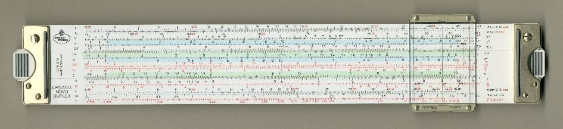

CP213: Applied mathematics and problem solving
Module overview
L Lue
Department of Chemical and Process Engineering
University of Strathclyde
Overview
- Module leader: Leo Lue & Abdul Sharif
- Demonstrators: Matthew Lenaghan and Thomas Paterson
- Lectures / Q&A sessions:
- Monday 10.00–11.00, RC641 (weeks 1–10)
- Wednesday 12.00–13.00, TL423 (weeks 1–10)
- Tutorials:
- Tuesday 15.00–17.00, JW410/411 (weeks 1–10)
- Class test (week 11):
- Tuesday 15.00–16.00, JW410/411 (2025 December 02)
Components of assessment
| component | weight | format | time |
|---|---|---|---|
| class test | 20% | 1 hour | 2025 December 02 |
| Tuesday 3.00 pm | |||
| final exam | 80% | 2 hours | April-May exam period |
Format
- tutorial worksheets
- released at the beginning of the week
- uploaded to Myplace by midnight on Monday
- fully worked model solutions released on Tuesday
- peer assessment of two other tutorials by Sunday
- lectures and Q&A sessions on Mondays and Wednesdays
Prerequisites
- CP101: Basic Principles in Chemical Engineering
- CP102: Chemical Engineering: Fundamentals, Techniques and Tools
- MM111/MM112: Mathematics 1B/2B
Key learning objectives
- Mathematics
- Using Python
- Problem solving
Balances
\begin{align*}
{\rm accumulation} &= {\rm in~flow} - {\rm out~flow} + {\rm generation}
\end{align*}
- balances
- mass / species
- energy
- momentum
- differential balances: calculus
- differential equations
Calculus
- differentiation
- integration
- fundamental theorem of calculus
\begin{align*}
f(b) - f(a)
&=
\int_a^b dx\,f'(x)
\end{align*}
review question:
Integrate:
\begin{align*}
I &= \int dx\, x e^{-a x^2}
\end{align*}
review question:
Integrate:
\begin{align*}
I &= \int dx\,x \sin x
\end{align*}
review question:
Integrate:
\begin{align*}
I &= \int dx\,x^2 e^{-x} \sin x
\end{align*}
How do you solve problems?
Python programming



Python as a calculator
Example using variables
Variables: Numbers and strings
Variables: Lists
Variables: Dictionaries
Example using dictionaries
More advanced use of dictionaries
Overimitation
Is mathematics useful?
Large Language Models and AI
Schedule for semester 1
- Weeks 1-2: Python and its applications
- Weeks 3-5: Differential balances
- Weeks 6-9: Ordinary differential equations
- Week 10: Module review
- Week 11: Class test
Useful links
Additional resources
- Books:
- K. A. Stroud, Engineering Mathematics
- M. L. Hetland, Beginning Python: From novice to professional
- On-line resources
- LearnChemE: http://www.learncheme.com/
- 3Blue1Brown: https://www.youtube.com/c/3blue1brown
- WolframAlpha: https://www.wolframalpha.com
- Google Gemini: https://gemini.google.com/
Questions?
If you have any questions, please post to the class forum on Myplace or email me at leo.lue@strath.ac.uk.